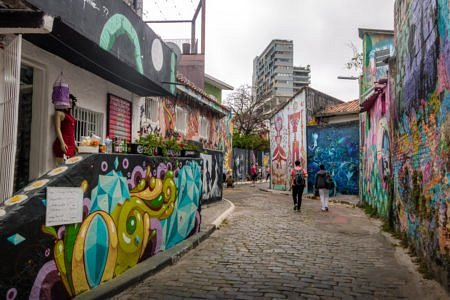
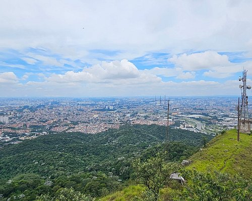
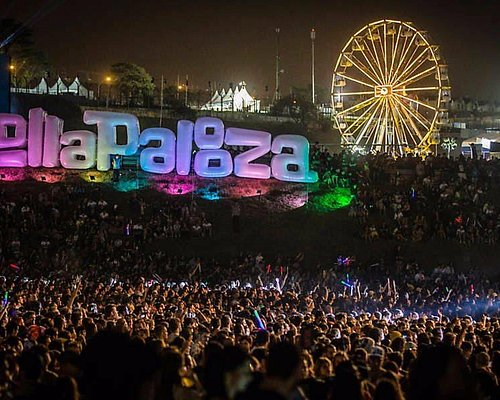
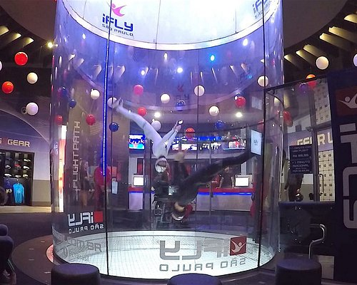
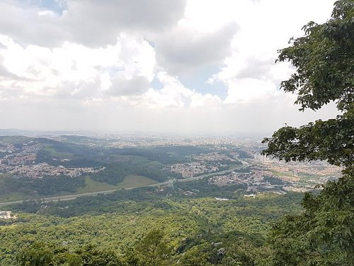
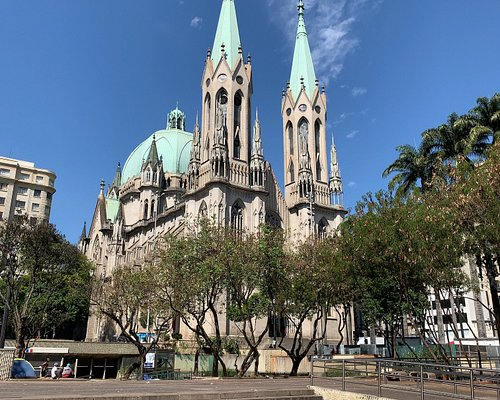
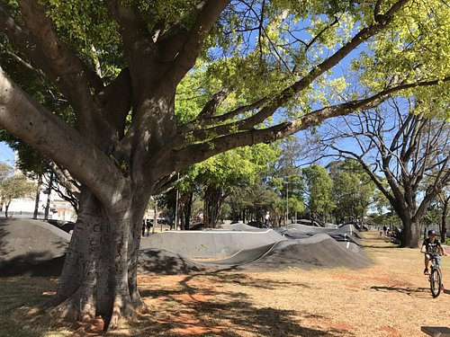
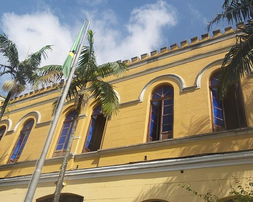
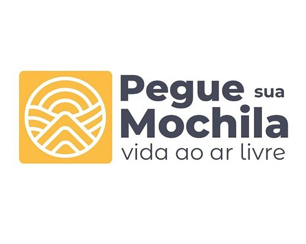
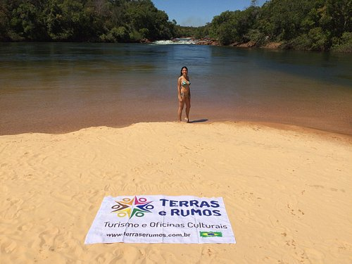

Aventuras

Beco do Batman
Atração futurística
O Beco do Batman é uma travessa localizada na Vila Madalena, um bairro boêmio da zona oeste da cidade de São
Paulo, situado no distrito de Pinheiros. Ele está localizado entre as vielas do bairro, mais precisamente nas ruas
Gonçalo Afonso e Medeiros de Albuquerque, perto da Estação Clínicas do metrô.

Pico do Jaraguá
Montanhas
Instalado na Villa San Pietro, escondida no meio da agitação dos Jardins, o Bistrot de Paris foi repensado em
todos os detalhes para se tornar um autêntico bistrot francês.

Autódromo José Carlos Pace - São Paulo
Pistas de corrida automobilística
O Autódromo José Carlos Pace é um autódromo municipal localizado no distrito de Cidade Dutra, na cidade de São
Paulo, Brasil. Pela proximidade com o bairro de Interlagos, situado no distrito vizinho do Socorro, é popularmente
chamado de Autódromo de Interlagos.

iFly São Paulo
Escola, Tecnologia
Escola de voo indoor, que ensina as técnicas de voo e manobras da modalidade em um túnel de vento de alta
tecnologia.

Trilha do Pai Zé
Trilhas para caminhada
A trilha do Pai Zé possui aproximadamente 1800m de extesão, sendo a principal trilha da unidade por proporcionar a
possibilidade de ir da parte baixa do parque até o ponto mais alto, onde se localiza o pico do jaraguá; ao longo
do percurso é possivel de observar dois tipos de bioma (mata atlântica e cerrado) e seus respectivos exemplares de
flora nativa.

Praça da Sé
Pontos de Interesse
A Praça da Sé é um espaço público localizado no bairro da Sé, no distrito homônimo, no Centro do município de São
Paulo, no Brasil. É considerado o centro geográfico da cidade. Nela, localiza-se o monumento marco zero do
município.

Centro de Esportes Radicais
Parques
O Centro de Esportes Radicais da cidade São Paulo, no Bom Retiro ao lado do Estádio Municipal de Beisebol Mie
Nishi e da Marginal Tietê. Com aproximadamente 38.500 m², o local possui ciclovia, pista de caminhada, uma Mini
Ramp, pista para iniciantes; e a Pumptrack, um circuito com início, meio, mas nunca um fim, onde o praticante anda
“bombeando”, sem impulsionar, apenas ganhando velocidade na medida em que passa pelos obstáculos.

Túnel da Rota
Museus militares
O túnel da ROTA, foi transformado em um Museu Subterrâneo, possui salas que contam parte da história do quartel
através de fotografias de época, cartazes e objetos. É possível visitar, de forma gratuita.

Pegue sua Mochila
Excursões de vários dias, Excursões ecológicas, Passeios turísticos
Organizam viagens somente em grupos com datas programadas, de janeiro à dezembro. Desde passeios de 1 dia a
viagens com pernoite. Principais regiões: São Paulo, Rio de Janeiro, Minas Gerais, Parana e Santa Catarina.

Terras e Rumos Turismo e Oficinas Culturais
Excursões de vários diasExcursões por patrimônios históricos
Agência de Turismo especializada em viagens em grupos. Nosso conceito e missão são realizações de viagens
sustentáveis, realizadas e elaboradas por profissionais capacitados sempre com o envolvimento de agentes do
turismo local.